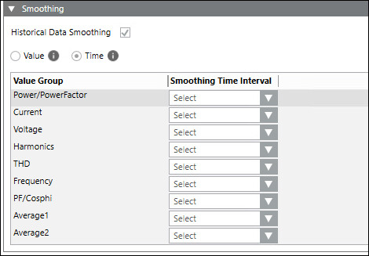
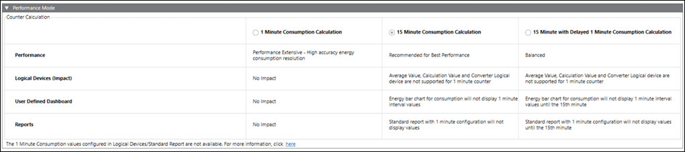
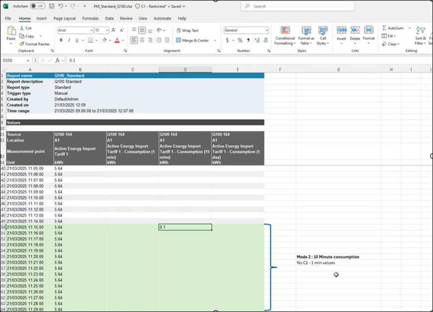
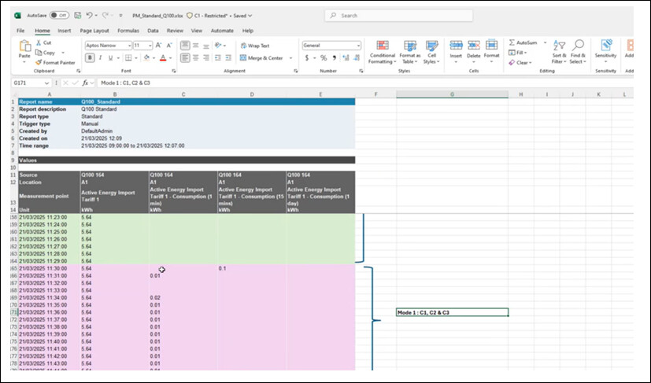
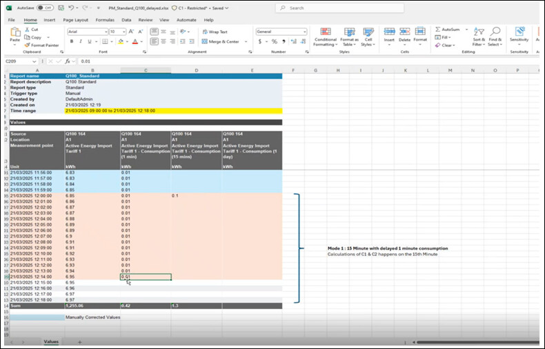

System Tab
In Engineering mode, when you select the Powermanager root node, you must first configure the parameters of the System tab that displays by default.
The following expanders let you configure the parameters of the System tab:
Pre-requisite Configuration Expander
Extension Module: Displays list of all extension modules which can be configured.
Pre-requisite Set-up Status: Displays the status of pre-requisite configuration
Action: Allows you to configure pre-requisites for extension modules.

Main Expander
It allows you to configure the following fields:
Overwrite SMC Web Configuration: Allows you to overwrite the URL configurations applied from the SMC.
Web Service URL: Displays the Web Service URL.
Advanced Reporting URL: Displays the Advance Reporting URL.
Flex URL: Displays the Flex URL.
Network Configuration Expander
It allows you to configure the following fields:
Protocol: Allows you to enter the protocol.
Network Name: Allows you to enter the network name.

Software Account Configuration Expander
It allows you to configure the following field:
Username: Allows you to select the software account user name from drop-down list.

Smoothing Expander
It allows you to configure the following fields:
Historical Data Smoothing: Allows you to select between time based smoothing or value based smoothing.
Value: Allows you to enable value based smoothing. The current value is archived only when there is a change from the last read value.
Time: Allows you to select the interval for time based smoothing in the Smoothing Time Interval column.

Value Group: Displays the property group of the devices being polled.
Smoothing Time Interval: Allows you to select smoothing time intervals for the selected value groups.
Import Device Type Expander
It allows you to create or delete new device types.
Create
- Library name: Allows you to enter the name of the library under which the new device type is created.
- Select File: Allows you to browse and select the JSON file to be used to create the device type.
Delete
- Device Type Name: Allows you to select the device type to be deleted.

Performance Mode Expander
Performance Mode expander consists of Counter Calculation table with three performance modes that allows you to manage data and optimize the counter calculations based on the selected mode.
Following are the three performance modes:
- 1 Minute Consumption Calculation
- 15 Minute Consumption Calculation
- 15 Minute with Delayed 1 Minute Consumption Calculation
Counter Calculation Table
The Counter Calculation table provides information on performance, impact on logical devices, user defined dashboard/ trends and impact on Reports for the selected modes.
Selecting these performance modes will impact the consumption calculation of all field devices, logical devices, and virtual devices in the project.
Performance: Provides the information about application performance based on the selected mode.
Logical Device (Impact): Provides the information about impact of the three modes on logical devices.
User defined Dashboard/Trends: Provides the information about energy bar chart consumption for each mode.
Reports: Provides the information about the standard report for each mode.

1 Minute Consumption Calculation | 15 Minute Consumption Calculation | 15 Minute with Delayed 1 Minute Consumption Calculation |
|
|
|
Reference Images for Standard Reports
15 Minute Consumption Calculation: In this performance mode, only 15-minute consumption calculations are performed for the archived counter values and stored in the database. Using these 15-minute values, one-day counter calculations are performed. One-minute counter calculations are not available in this mode.

1 Minute Consumption Calculation: In this performance mode, 1-minute, 15-minute, and 1-day values are logged in the database.

15 Minute with Delayed 1 Minute Consumption Calculation: In this performance mode, 1-minute values are logged in the database only after the completion of the 15th minute.

Alarm for Archived Counter Data Points
- In the Powermanager > System tab > Extended Operation section, the number of archived counter data points in the project is displayed.
- When the performance mode is set to 1-Minute Consumption Calculation and the number of archived counter data points equals or exceeds 1500, an alarm is triggered in the High Alarm section. The following message is displayed.
Switch to High Performance Mode or reduce the number of archived counter data points for better performance. - For this alarm, do one of the following:
- Reduce the number of archived counter data points (The alarm notification will turn off after reduction)
- Switch to a different performance mode, either 15-minute consumption or 15-minute with delayed 1-minute consumption (The alarm notification will turn off after switching). - Acknowledge option is available in the management station to acknowledge the alarm. If the above conditions are not met, the alarm will continue to be displayed.
For related instructions ,see Configure the Performance Mode.